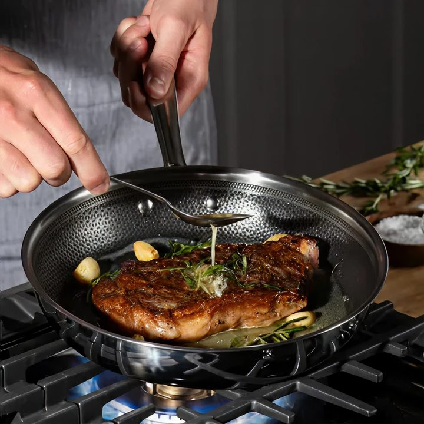
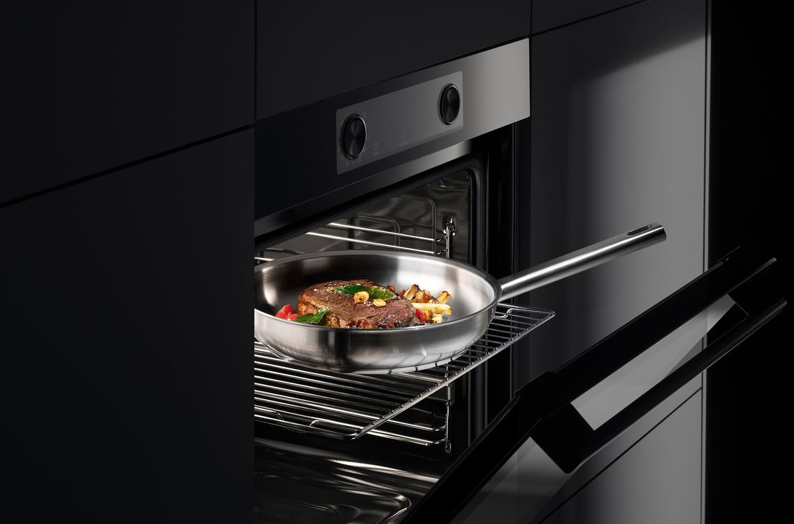

Searing
Steak, crispy potatoes and anything that needs a golden-brown crust. Look for uncoated stainless steel or a honeycomb-structured surface.
From everyday frying to woks, grill and serving pans — the full WMF and Silit pan range. Choose a category below, or browse everything in one place.
Pan buying guide
Start with the food you cook most often. Each cooking style works best with a different pan surface.

Steak, crispy potatoes and anything that needs a golden-brown crust. Look for uncoated stainless steel or a honeycomb-structured surface.

Fish, eggs and vegetables at moderate heat. A non-stick or ceramic surface helps delicate food come away easily.

A little of everything, every day. Choose an all-round pan in the size you use most.
Practical tips
Preheat the pan over medium heat rather than on maximum, add the fat, then the food. On uncoated stainless steel, wait until a crust forms before turning: the food then comes away more easily.
Refined rapeseed oil suits high-heat searing. Butter burns more easily, so use it at moderate heat or add it at the end for flavour.
Uncoated stainless steel: soak any residue in warm water first. Coated pans: let them cool, then use mild washing-up liquid and a soft sponge. Always follow the care instructions for your model.
WMF since 1853
WMF has worked with metal since 1853. Today the pan range spans Cromargan® stainless steel, coated and ceramic surfaces and Fusiontec®, each suited to a different way of cooking.
Explore Fusiontec pansCustomer reviews
After buying the large wok and the 28 cm pan and being very happy with the results, we added the 24 cm as well. You need nothing else. It heats up quickly, especially on induction. Thumbs up.
Profi Resist Fry PanEasy to use, good non-stick effect. Perfect for scrambled eggs or pancakes.
Profi Resist Fry Pan with SpatulaThe wok is huge. Vegetables are done incredibly quickly. Meat too, quick and well cooked. The wok does not get scalding at the sides.
WokGood to know
With uncoated stainless steel, the heat, the amount of fat and the moment you turn the food all play a part. Meat often sticks at first and comes away once a crust has formed. Preheat the pan carefully and follow the advice for your model.
A non-stick or ceramic pan makes delicate food easier to turn. Cook at moderate heat. If you mostly sear and make pan sauces, uncoated stainless steel may suit you better.
Induction needs a pan with a magnetic base. Each product tile shows which cooktops the pan suits, and you can filter by cooktop type above.
As a guide: 20 cm for 1–2 people, 24 cm for 2–3 people and 28 cm for 3–4 people. Sets combine two sizes for different dishes.
It depends on the material, surface and model. We recommend washing coated pans by hand. Check the care instructions for your model.
Answer a few questions and the Pan Finder suggests pans that match how you cook.